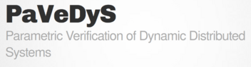
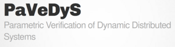

Workshop on
Pomsets
and
Related Structures
RaPS
The Workshop on Pomsets and Related Structures will take place at EPITA Rennes on 24 April 2024.
The workshop is associated with the (i)Po(m)set Project, a research project at the crossroads of concurrency theory, automata theory, algebra, and geometry. The project also has an online seminar, and the workshop is an offshoot of that seminar.
The RaPS workshop is collocated with ATLAS'24 and will be followed by the Journées GT DAAL.
Venue
The workshop will take place at EPITA Rennes in downtown Rennes, close to the train station.
Contributions
Invited talk:
- Henning Basold: TBA
Accepted contributions:
- Luc Edixhoven: Branching pomsets and event structures
- Luca Bernardinello: The Synthesis Problem for Regional Algebras of Labelled Transition Systems
- Samy Abbes: Making concurrent systems probabilistic
- Loïc Hélouët: Hyper Partial Order Logic
- Fabio Gadducci: Concurrent semantics for fusions: Weak prime domains and connected event structures
Participants
Preliminary list of participants (updated 28 March):
- Samy Abbes, Université Paris Cité, France
- Amazigh Amrane, EPITA Paris, France
- Henning Basold, Universiteit Leiden, The Netherlands
- Hugo Bazille, EPITA Rennes, France
- Luca Bernardinello, University of Milano-Bicocca, Italy
- Christian Choffrut, Université Paris Cité, France
- Emily Clement, Université Paris Cité, France
- Luc Edixhoven, Universiteit Leiden, The Netherlands
- Enzo Erlich, ENS Rennes, France
- Uli Fahrenberg, EPITA, Rennes, France
- Marie Fortin, CNRS & Université Paris Cité, France
- Fabio Gadducci, Università di Pisa, Italy
- Loïc Hélouët, Inria Rennes, France
- Roman Kniazev, Université Paris Cité, France
- Jérémy Ledent, Université Paris Cité, France
- Luc Passemard, École polytechnique, Paris, France
Important dates
- Abstract submission: 22 March 2024
- Author notification: 29 March 2024
- Registration: 12 April 2024
- Workshop dates: 24 April 2024
Local information
The workshop takes place in the centre of Rennes, with plenty of hotels and restaurants nearby. The below selection of hotels is rather random and by no means exhaustive; and we endorse none of them especially.
Public transportation in Rennes is currently in shambles because of the disaster that is the new Métro ligne b. On the other hand, in centre town everything is accessible by walking.
2-star hotels
- Garden Hotel: in the very heart of Rennes, with its own car park and close to the station, bus services and metro.
- Hôtel Atlantic: located just 80 metres from the railway station and close to the coach and metro stations and local bus routes.
3-star hotels
- Campanile Rennes Centre Gare: a city-centre hotel right next to the train station.
- Kyriad Rennes Centre Gare: conveniently located for the historic city centre, Parlement of Brittany building and parc Thabor.
4-star hotels
- Mercure Rennes Centre Parlement: former printworks steeped in history, right next to the historical centre with its shops and boutiques.
- Novotel Rennes Centre Gare: only 50 metres from the railway station, modern hotel with spa, pool, Jacuzzi, fitness room, etc.
Sponsors
 
